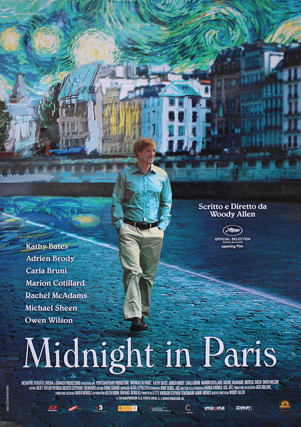

Recommended Food: Midnight in Paris

Why don't you take a trip to Paris on a night when magical things seems to be happen?
Synopsis
Gil Pender (Owen Wilson) is a screenwriter and aspiring novelist. Vacationing in Paris with his fiancee (Rachel McAdams), he has taken to touring the city alone. On one such late-night excursion, Gil encounters a group of strange -- yet familiar -- revelers, who sweep him along, apparently back in time, for a night with some of the Jazz Age's icons of art and literature. The more time Gil spends with these cultural heroes of the past, the more dissatisfied he becomes with the present.